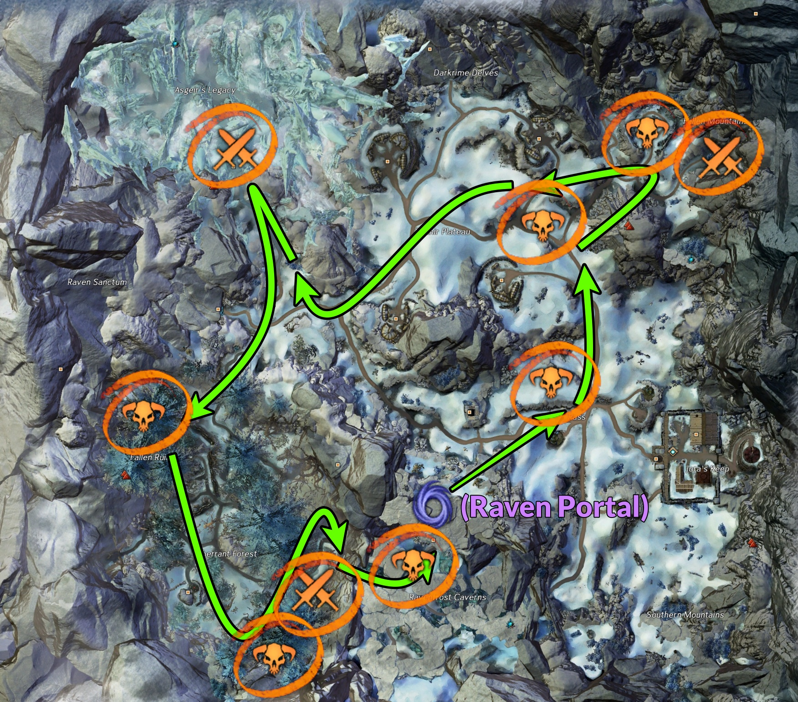
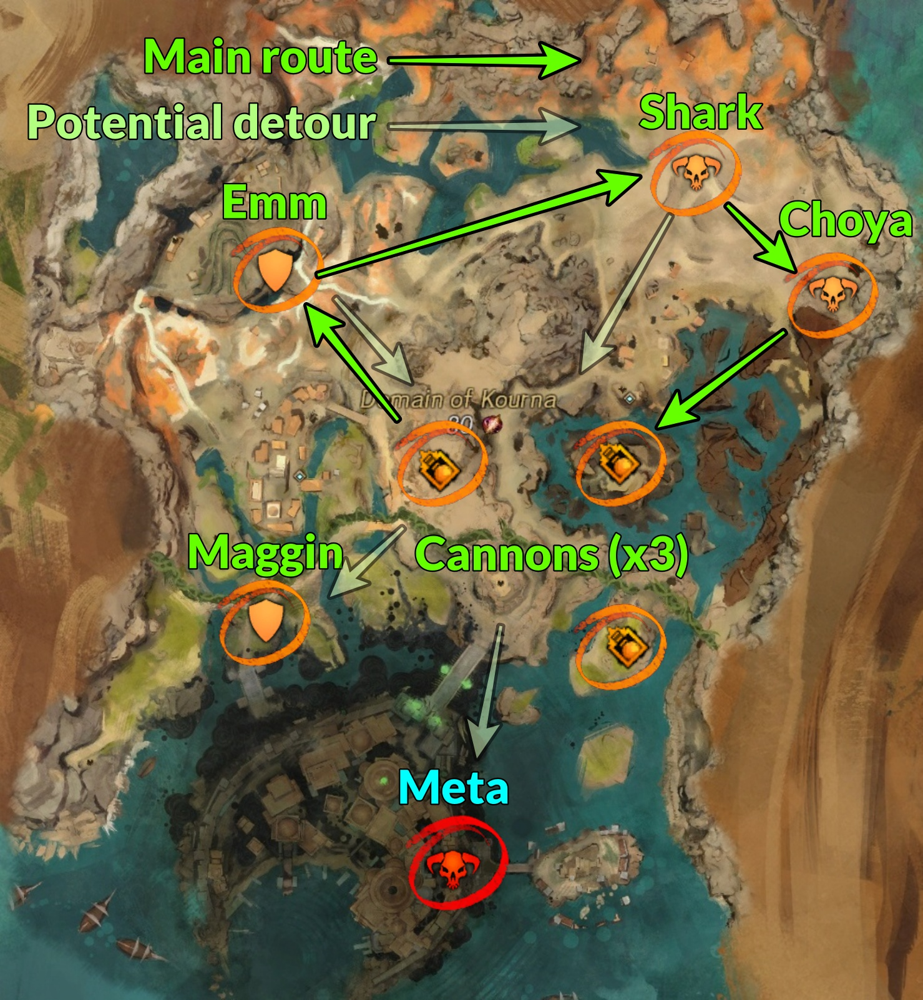

This page lists and describes any farms that I have on my benchmarks page that contain a unique map combo for a farm. Use the sidebar or scroll down to navigate through each farm.
Amalgamated & Key Metas
As the title says, this farm is about Amalgamated Gemstones and Keys in PoF, LS4, and LS5 maps. This farm is difficult to do without a somewhat organized group and above average DPS. There are lots of quick map swapping and traveling in order to get to other metas in time. Here's the rundown:
- Crystal Oasis: Choya Pinata
- Desolation: Junundu Wurms
- Grothmar: Doomlore Shrine
- Thunderhead Peaks: Oil Floes
- Domain of Vabbi: Forged with Fire
- Grothmar: Ooze Pit
The hardest part about this farm is that each meta needs to be completed on-time or a minute after the next meta. For example, Junundu Wurms overlaps with Doomlore by a minute or two (depending on the DPS), but the escort and meta should still be up. Same with Oil Floes, but that also requires some organization to have everyone split into the three drills.
Grothmar/Bjora Marches
This farm splits into Grothmar and Bjora constantly. It starts with Grothmar's meta and ends with Grothmar's meta, but in between has Bjora events. The basic rundown goes as following:
- Grothmar: Effigy Meta
- Kourna events
- Grothmar: Doomlore Meta
- Kourna events
- Grothmar: Ooze Pit Meta
For every Grothmar meta, there is about a 40 minute timer. But, both Doomlore and Ooze Pit are able to begin before the 40 minutes. For example, Effigy could begin at :10 and Doomlore could begin at :35. For Doomlore, there will be an NPC ready at [&BAUMAAA=]. For Ooze, check the [&BPgLAAA=] waypoint to see if it is up.
For Bjora, I do a clockwise rotation from Jora's Keep Waypoint [&BCcMAAA=] throughout the eastern section of the map. There are a total of 6 champions and 3 raiding parties with generally low cooldown. Though, every event has a fail timer the moment they spawn so it's a gamble what events will be up by the time you arrive. Use the timer page to determine the respawn rate.

Grothmar/Domain of Kourna
This farm splits into Grothmar and Kourna constantly. It starts with Grothmar's meta and ends with Grothmar's meta, but in between has Kourna events and potentially that meta. The basic rundown goes as following:
- Grothmar: Effigy Meta
- Kourna events
- Grothmar: Doomlore Meta
- Kourna events
- Grothmar: Ooze Pit Meta
For every Grothmar meta, there is about a 40 minute timer. But, both Doomlore and Ooze Pit are able to begin before the 40 minutes. For example, Effigy could begin at :10 and Doomlore could begin at :35. For Doomlore, there will be an NPC ready at [&BAUMAAA=]. For Ooze, check the [&BPgLAAA=] waypoint to see if it is up.
For Kourna events, the priority goes as follows:
1) Researcher Emm
2) Cannons (not meta pre-event)
3) Champion Shark
4) Choya Chieftain
5) Meta
6) Researcher Maggin
It sounds a little unusual to have a meta event as low priorty, but unfortunately, the Kourna meta really is lacking in terms of loots. None of the mobs drop any loot for both the pre-event cannons and the meta itself. In addition, the boss is very dull, boring, and tanky.
Thus, other events take priority over the meta in order to max out loots and Volatile Magic. They all have a relatively low cooldown. For more information of the events, check out the map info page and follow the event respawn rates at the timer page .

HoT Meta Train
While this says "HoT", I do not go to Dragon's Stand. The reason is because Dragon's Stand is long and not an easy way to get loot. This farm goes as following:
- Verdant Brink: 1 Boss (Matriarch or Axemaster)
- Tangled Depths: Events and meta
- Auric Basin: Events and meta
Infusion Train [SM]
This train is done by the guild Shiny Mayhem [SM] with cjosh.4598 and Allytria.6734. The train starts and begins at XX:05, at reset. The route goes as following:
This farm is generally hosted by Guild MM Trading Company [TP], Overflow Trading Company [OTC], This Guild Ruined My [Life], and End Game [CREW]. The train is run extremely frequently during almost the entire day from afternoon to very late night. I highly recommend joining the Overflow discord for pings and notices on when they are going to run their train!
Check out Guild MM's LS4 train meta video guide for an in-depth information:
Each guild has their own preference to what the route is, but here's the general idea/plan:
Domain of Istan Palawadan meta (xx:45) → events until Great Hall meta (xx:20) → possibly repeat events until Thunderhead Meta at xx:45
Events include: Akali, Pirate event chain, Legendary Smoldge bounty, Graveyard
Thunderhead Peaks (1/2) Oil Floes (xx:45)
Jahai Bluffs DERV Escort (xx:00) → Death-Branded Shatterer (~xx:15) → Incursions, Ziya (Djinn Escort) until next Thunderhead Meta at xx:45
Thunderhead Peaks (2/2) Thunderhead Keep (xx:45)
Sandswept Isles Ideal plan: South meta → North meta
Unlike the other LS4 maps, these metas are timed based on their instanced rather than a global timer. Depending on the progress of the map will deteremine the next steps for the train. In general, North meta is difficult to solo/small groups so it's rarely done and is able to pause its progress. The South meta is on a 40 minute cooldown from its last run, but a 15 minute timer will appear on the side if you're in the area.
If there is some time between North and South, doing the Dominus Crystallium, Mark III Golem, or Beetle Queen are good fillers. If not, there are also easy champion bounties, with north ones being easier.
PoF Meta Train
This farm goes through all PoF maps except Desert Highlands. Besides me, the other commander that runs this train is darkphoenix.3740. The route as following:
- Elon Riverlands: Path of Ascension → Events in between → Doppleganger
- Domain of Vabbi: Forged with Fire
- Crystal Oasis: Casino Blitz / Pinata
- Desolation: Legendary bounties → events → Junundu Wurms
Reset Train
This farm is about bouncing meta to meta after reset. Due to Daylight Savings, this may be placed on a different hour than reset. I heard there's a commander that does this and I'll have to record their train one of these days to replace this one. My route goes as following:
This farm starts with Thunderhead and still ends with Thunderhead. In between each meta, do Kourna events since Thunderhead does not provide good events to farm.
Each Thunderhead meta starts at the xx:45 of the hour, alternativing north or south for every hour. Depending on when you do the train, you could start at north meta or south meta. Each meta will take about 15-20 minutes to complete, leaving about 45 minutes to do Kourna events.
In those 45 minutes, the priority in Kouna goes as follows:
1) Researcher Emm
2) Cannons (not meta pre-event)
3) Champion Shark
4) Choya Chieftain
5) Meta
6) Researcher Maggin
It sounds a little unusual to have a meta event as low priorty, but unfortunately, the Kourna meta really is lacking in terms of loots. None of the mobs drop any loot for both the pre-event cannons and the meta itself. In addition, the boss is very dull, boring, and tanky.
Sandswept Isles/Domain of Kourna
This farm starts with Sandswept and ends with Kourna. The reason is because the metas (2) in Sandswept are extremely profitable and has the potential to do both back-to-back. Kourna is involved because, to fill an hour worth of time, Kourna is a great filler to quick events that does not involve anything strict. Ideally, the farm would go something like this:
1) Sandswept: Specimen Chamber meta
2) Sandswept: Dominus Crystallum
3) Sandswept: Gathering Storms meta
4) Kourna events
As the commander, it is possible to prep the train. By going to the map about 30 minutes to an hour early, parking a character to check on the activity of both metas is good to keep track of each. Use Sandswept timer page to figure out the respawn time of each meta if you happen to see it complete or fail.
For Kourna events, the priority goes as follows:
1) Researcher Emm
2) Cannons (not meta pre-event)
3) Champion Shark
4) Choya Chieftain
5) Meta
6) Researcher Maggin
It sounds a little unusual to have a meta event as low priorty, but unfortunately, the Kourna meta really is lacking in terms of loots. None of the mobs drop any loot for both the pre-event cannons and the meta itself. In addition, the boss is very dull, boring, and tanky.